The Quiet Anti-Snoring Mouthpiece Universal Size

🚨 PRE-BLACK FRIDAY SALE - OVER 50% OFF - LIVE NOW! 🚨
Gently advances your jaw with no jaw pain and no drooling
-
Easy to Use – No Boiling or Molding
-
Universal Fit With Adaptive Material
-
60-Day Money-Back Guarantee
-
Free Worldwide Shipping (3-12 days)
❗️ Max 5 Units Per Customer❗️

JUST TRY IT. 100% RISK FREE
We know buying anything online is a risk.
That’s why we back your purchase with a
60-day money-back guarantee.
We’re so confident this product works that we’ll give you a
full refund — no questions asked —
if you’re not completely satisfied.

“This one really works. I can finally get a good night's sleep, and I actually feel so much better in the morning!"
John H. ✅ Verified BuyerDelivery is carried out from international warehouses and takes 3 to 12 business days (in rare cases, a slight delay is possible) depending on product demand and warehouse availability.
Each anti-snoring mouthpiece includes a free protective storage case.
This Revolutionary Device Instantly Eliminates Snoring (So You & Your Partner Can Sleep Better Than Ever Before)
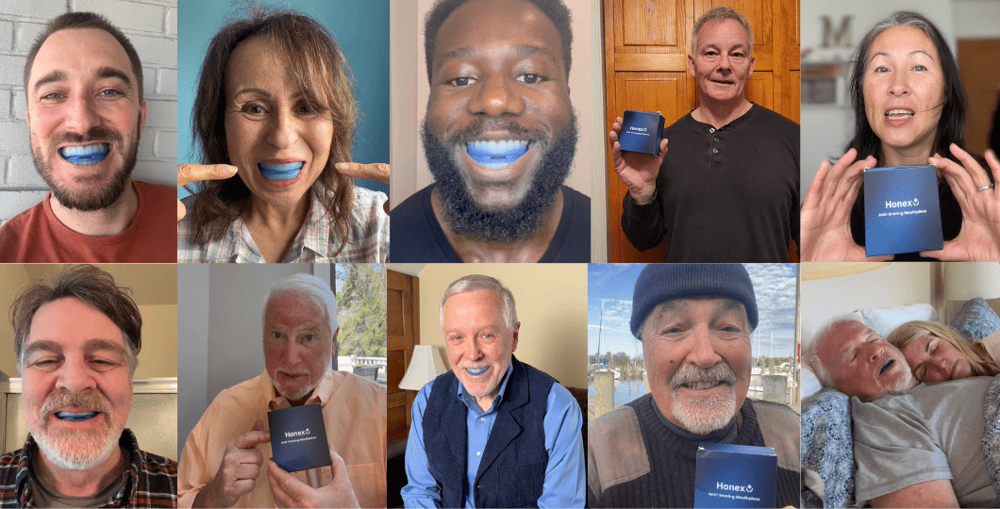
Over 900+ ⭐️⭐️⭐️⭐️⭐️ 5-Star Reviews & Counting
Do you struggle to get deep, restful sleep because of either
your own or your partner's snoring?
Are you waking up tired no matter how long you slept?
That’s a definite yes for me. Honestly, I can’t even remember
the last time I had a good night’s sleep...
I didn’t know this until recently, but a study published in the
National Library of Medicine made a disturbing discovery:
When you’re deprived of restful sleep, your body experiences up to a
72% decrease in Natural Killer (NK) cells. These cells are
responsible for destroying harmful virus-infected cells, as
well as detecting and fighting early signs of cancer.
So each night of poor sleep
weakens your immune system and leaves you more and more
vulnerable.
Beyond that, contrary to popular belief, snoring is more than just a
minor inconvenience… It
sabotages both your and your partner’s sleep, building
tension and quietly straining your relationship.
Can you relate?
Well, you're not alone. Over 35 million people
regularly suffer from snoring, or share a bed with someone who
does.
Now, having struggled with snoring my entire life, I've
tried just about everything to fix it: nasal strips, special
pillows and sleeping positions, even those little inserts you put up
your nose... none of them worked for me.
But imagine being able to
eliminate snoring and finally get the restful sleep you deserve —
instantly.
Wouldn't you
enjoy more energy, a better mood, healthier relationships, and
just feel so much better every day?
For me, the answer was a resounding 100% YES!
Well, I finally discovered a
breakthrough dentist-designed, doctor-approved, and FDA-cleared
device that’s changing lives for anyone who wants to stop snoring
for good.
For the first time ever, you're able to
instantly eliminate snoring — safely, easily, and naturally.
And it’s all thanks to a revolutionary device called The Quiet.
What is it?
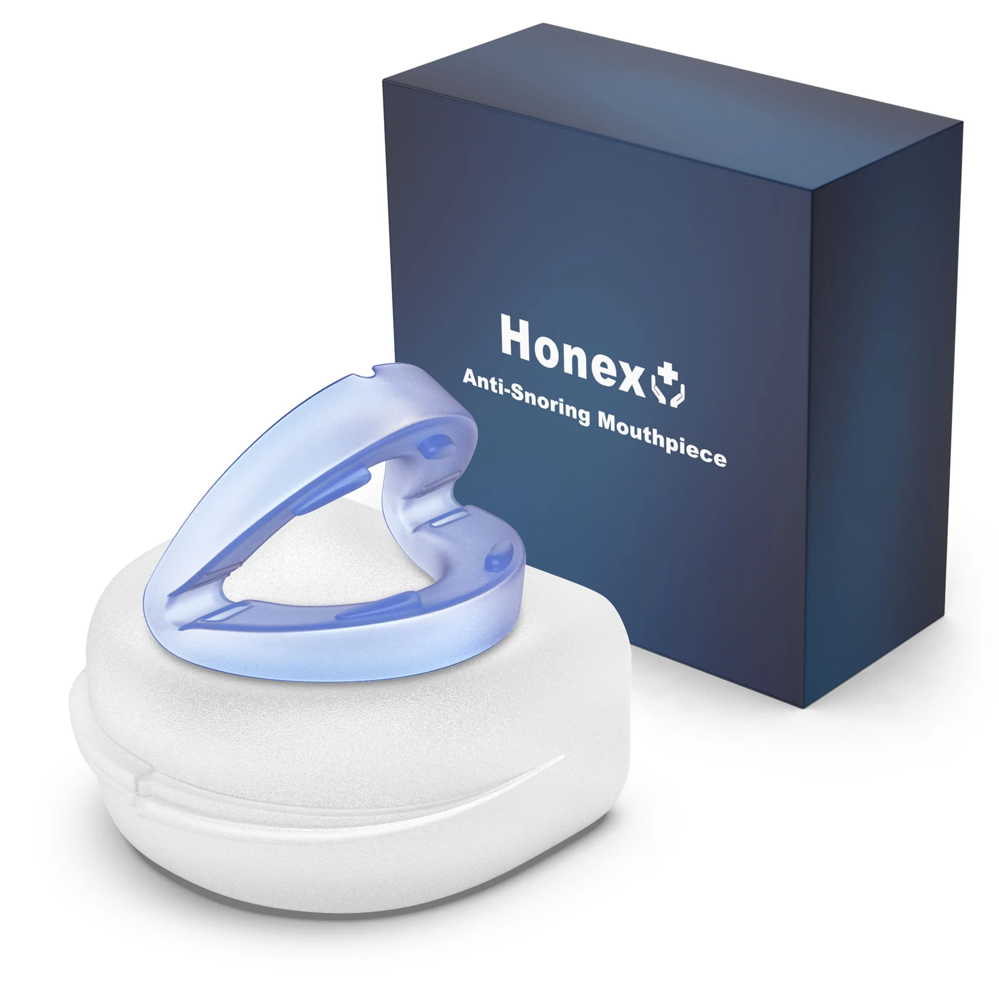
The Quiet is a patented mouthpiece made in the UK,
designed to eliminate your snoring from the very first night you
wear it.
To use it, simply place it in your mouth before sleep… and wake up
feeling rested, refreshed, and next to a happy partner!
The best part is that almost anyone can order one, open the box, and
start sleeping better. Unlike other mouthpieces, The Quiet doesn’t
require any preparation. That means
no expensive appointments with a specialist and
no boiling or molding your mouthpiece — it’s ready to use
right away.
Plus, The Quiet is so comfortable that it's easy to forget
you’re even wearing it. Other methods can restrict your jaw
movement, making it almost impossible to fall asleep… but not The
Quiet.
You’ll enjoy the extra comfort that comes from
letting your jaw move naturally, without the snoring, just
the way nature intended.
Users say they (and their partners) have
enjoyed extra energy after using The Quiet, thanks to the
improved sleep and the ability to breathe with ease.
It’s also highly adaptable and comfortable for all types of
sleepers. Because of The Quiet's
unique design and flexible materials, you have the option to
sleep with your mouth open or closed — while other solutions force
you to clench your teeth, leaving your jaw sore.
It’s safe to say that
The Quiet is the only sleep solution that attacks snoring at the
root,
rather than just covering up the problem. And , clearly, people are
taking notice… The Quiet has been getting rave reviews from major
media outlets and doctors alike!
How Does it Work?
TTo understand why
The Quiet has quickly become the most reliable option for
millions of snorers, you first need to understand what causes
snoring in the first place.
In the past, experts believed that snoring was caused by the tongue.
That’s why so many
anti-snoring solutions are designed to restrict tongue
movement…
But it turns out the tongue isn’t the real culprit after all!
Based on groundbreaking research, the
root cause of snoring is actually your lower jaw.
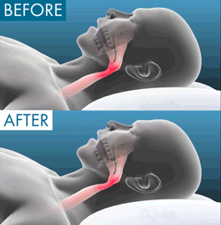
You see, your lower jaw relaxes when you fall asleep, causing it to
fall back.
This relaxed position collapses the airway in your throat.
As you breathe, air is forced through a narrower passage,
which creates powerful vibrations that produce the unmistakable
snoring sound and restrict your breathing.
As you already know, this condition
wrecks your sleep, drives your partner insane, and reduces your
quality of life.
So it only makes sense that
if you want to stop snoring, you need to move your lower jaw out
of the way.
The only problem is… until now, there’s been no reliable way to do
it.
That’s why The Quiet has been such a revolutionary therapy for
people who snore — it finally addresses the root cause!
By naturally supporting your jaw, The Quiet helps you
enjoy the deep, restful sleep that both you and your partner
have been missing.
Is it Easy to Use?
Yes! The Quiet now comes in one expertly designed universal comfort
size.
Before bed, simply insert the mouthpiece and drift off to sleep…
but this time, enjoy a night free from snoring!
Wake up feeling completely refreshed, full of energy, and greeted by
a happy, well-rested partner.
To ensure maximum effectiveness, The Quiet is engineered with a
precise 4mm forward adjustment of the lower jaw.
This optimal alignment is carefully chosen to help stop snoring
immediately.
With this universal size, everyone can finally experience the same
incredible result: a night of peaceful, silent sleep. No more
snoring, just pure, uninterrupted rest.
STEP 1 - INSERT The Quiet
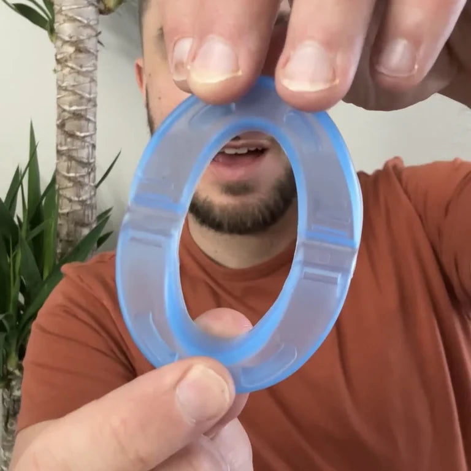
STEP 2 - ENJOY SNORE-FREE SLEEP
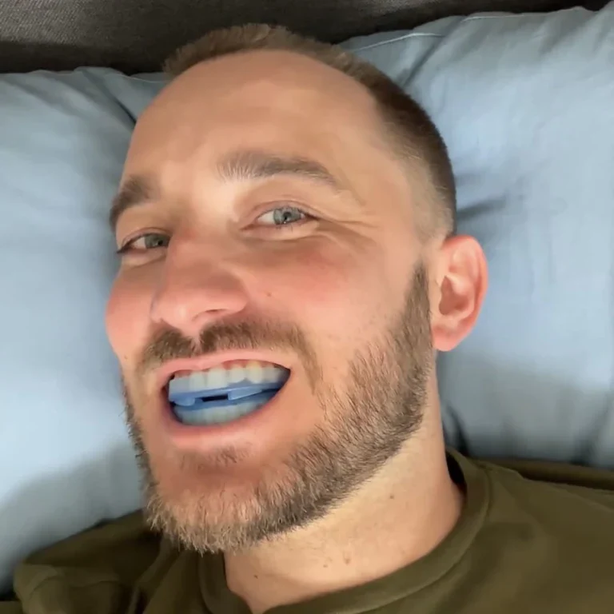
STEP 3 - WASH, RINSE and REPEAT
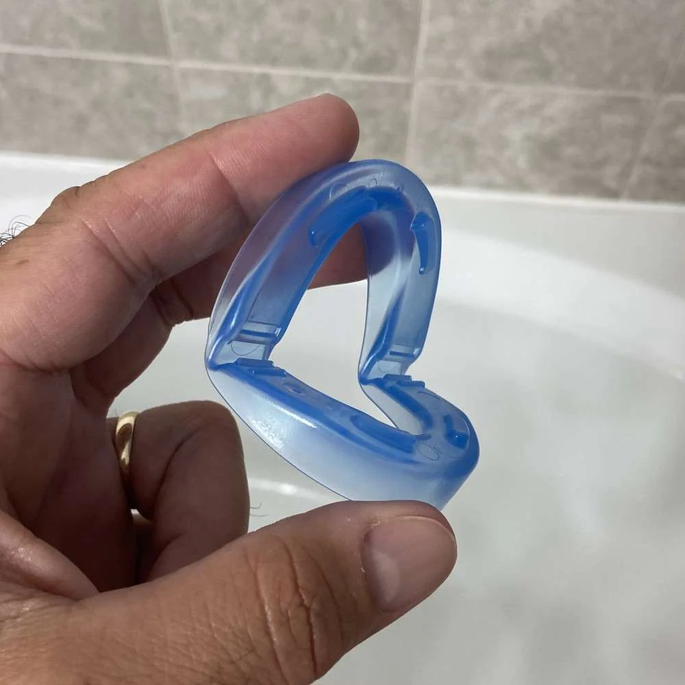
Ready to Wake Up Feeling Refreshed Every Day?
-
LOW-PROFILE
-
UNIVERSAL FIT
-
BPA & LATEX-FREE
-
REUSABLE
A Breakthrough for Better Sleep
It requires zero preparation, no visits to a specialist, and none of
the hit-or-miss boiling and molding process. You can’t mess it up…
get ready for better sleep the day you receive it!
#Benefits
EASY TO BREATHE & TALK WITH
Thanks to our Living Hinge Technology, The Quiet allows you the freedom to open and close your mouth — unlike alternatives that lock your teeth in place and restrict breathing.
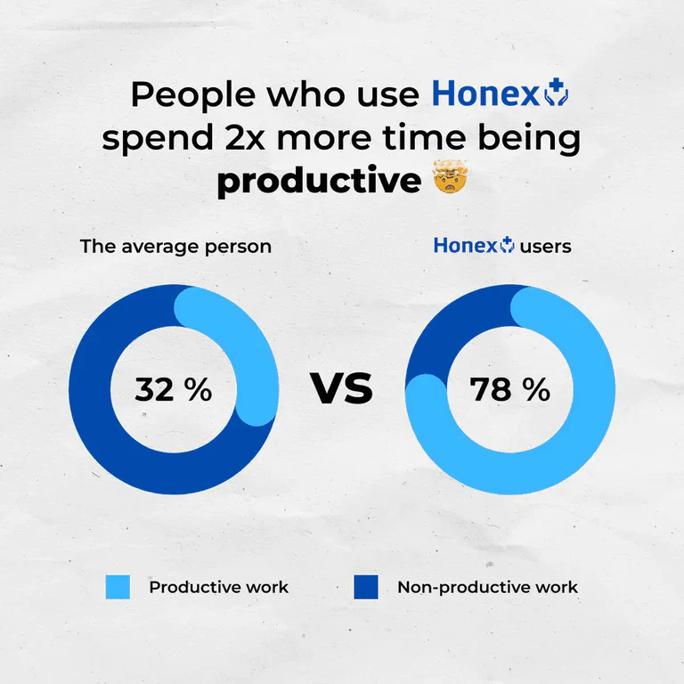
GOES WITH YOU ANYWHERE
The Quiet’s compact storage case is perfect for travel. It fits easily into your toiletry bag, so you can enjoy snore-free sleep wherever you go.
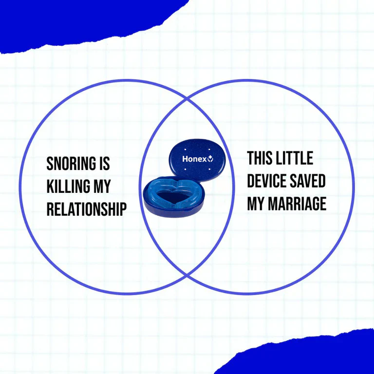
Doctor-Recommended, Dentist-Designed for Optimal Performance
The Quiet is extremely safe and effective.
Backed by decades of research, clinical trials, and over 1.5 million
satisfied customers, it’s the only mouthpiece that supports natural jaw
movement, so you don’t have to sleep uncomfortably all night with your
teeth clenched.
The Quiet also allows for mouth breathing, giving you the flexibility to
sleep with your mouth open or closed. You can even talk or drink water
without removing it.
With The Quiet, you get the same advanced technology as a dentist-fitted device… for a fraction of the cost.

The “Set It & Forget It” Way to Stop Snoring Overnight
Achieving quiet, healthy sleep has never been easier or more affordable!
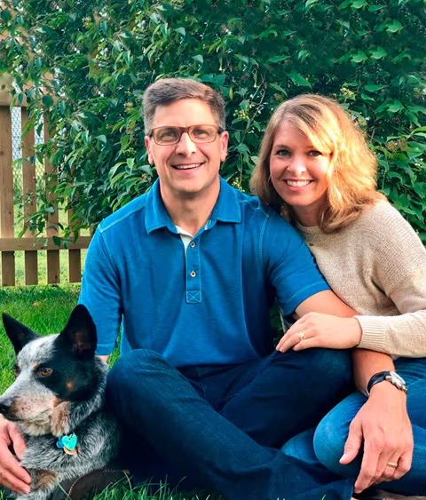
Helping Everyone Live Happier Lives Through Better Sleep
In 2008, Trina Webster reached a breaking point. Her husband, Dan, was a lifelong snorer… which left Trina tired, sleep-deprived, and irritated beyond belief. Dan tried multiple products, including expensive surgery, but nothing worked. Eventually, he discovered an oral appliance therapy from his dentist. Even though it wasn’t specifically designed for snoring, it completely knocked his snoring out on the very first night he used it. Dan and Trina were doubly shocked. First, that it worked… and second, that nobody else seemed to know about it! After just a few weeks of living a “new life” filled with rested mornings and silent nights, they made it their mission to share this amazing therapy with the world. They worked closely with dentists and sleep experts to create the perfect prototype. Since then, The Quiet has helped millions of people around the world enjoy restful, snore-free sleep.
Here’s Why 1.5 Million People Love The Quiet
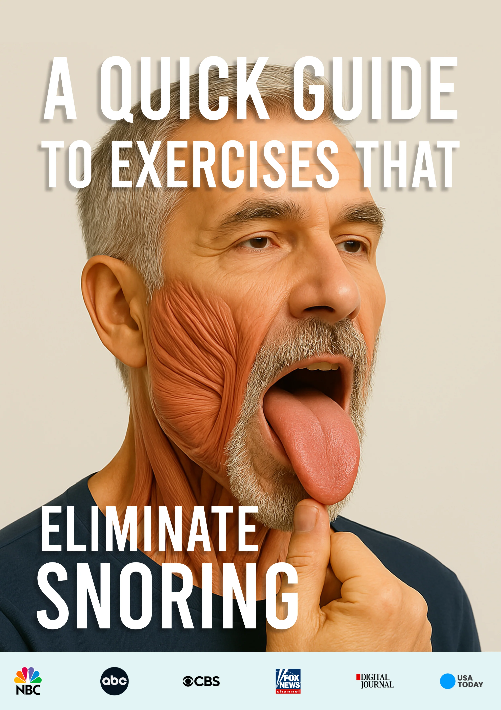
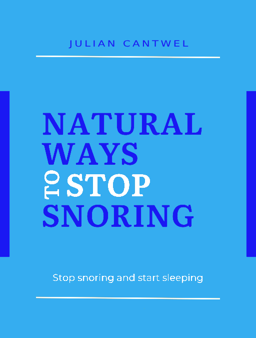
ORDER TODAY AND GET OUR FREE EBOOK: A QUICK GUIDE TO EXERCISES THAT ELIMINATE SNORING
MATERIAL BASED ON CURRENT EMPIRICAL RESEARCH CONDUCTED BY THE WORLD'S LEADING SCIENTISTS
What Else We Love
About The Quiet
It Comes Ready to Use – it requires zero preparation, no visits
to a specialist, and no hit-or-miss boiling and molding process. You
can’t mess it up… get ready for better sleep the day you receive it!
It's Easy to Breathe & Talk With - thanks to its Living Hinge
Technology, The Quiet allows you the freedom to open and close your
mouth — unlike alternatives that lock your teeth in place and restrict
breathing.
It's BPA & Latex-Free – made with medical-grade, allergy-safe
material. The Quiet is also easy to clean.
It's Made in the UK – proudly designed, engineered, and
manufactured in Derby at an FDA-registered facility under strict quality
controls.
60-Day Satisfaction Guarantee* – if for any reason you're not
100% satisfied with The Quiet, you can easily return it!
22,97 Reviews
Rachel H.
7/26/2025
Caroline
7/26/2025
Yvonne
7/26/2025
Caroline
7/26/2025
Sara
7/26/2025
Debra
7/26/2025
Taylor
7/26/2025
Noah B.
7/25/2025
Noah B.
7/17/2025
Susan
7/25/2025
Lily M.
7/25/2025
Ryan W.
7/25/2025
Andrew B.
7/25/2025
Susan
7/25/2025
Victoria C.
7/25/2025
Amber
7/25/2025
Sophia M.
7/25/2025
Crystal
7/25/2025
Barbara
7/25/2025
Daniel Q.
7/25/2025